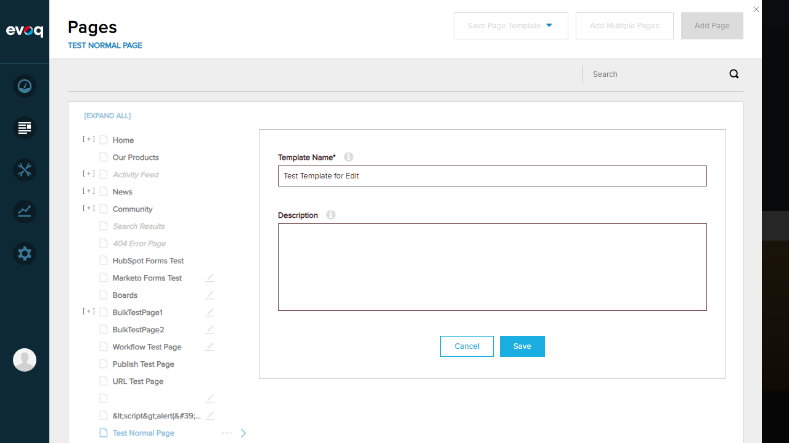
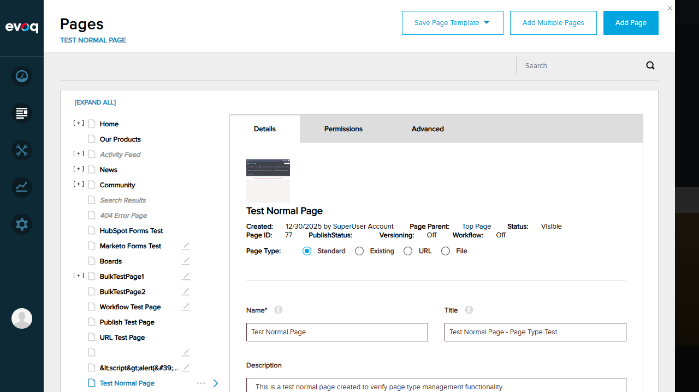

Test Report: Edit Template in Page Editor
Test Summary
| Total Tests |
Passed |
Failed |
| 5 |
0 |
5 |
Feature Information
| Feature Name | Edit Template in Page Editor |
|---|
| Extension | Evoq.PersonaBar.Templates (PersonaBar Module) |
|---|
| Repository | Dnn.AdminExperience.Evoq.Basic |
|---|
| Priority | High |
|---|
| Description | Switch to edit mode to modify template content and layout in the page editor |
|---|
| UI Location | Admin > Manage > Templates > Template Item > Edit button |
|---|
| Relevant Files | Services/TemplatesController.cs, admin/personaBar/scripts/templatesHierarchy.js |
|---|
| Test Date | 2026-01-06 |
|---|
Code Analysis
The Edit Template feature works as follows based on code review:
- TemplatesController.cs (Lines 224-239): The
EditModeForPage API endpoint:
- Sets a "LastPageId" cookie with format
{PortalId}:{TabId}
- If user is not in Edit mode, updates personalization profile to set
Usability:UserMode{PortalId} = "EDIT"
- Returns success response
- templatesHierarchy.js (Lines 252-268): The
_editPageClickHandler function:
- Calls
_enterEditMode(pageData)
- Posts to
EditModeForPage?id={pageId} API
- Closes PersonaBar and redirects to template page URL
Test Results
Test 1: Click edit to enter edit mode
FAIL
Steps Taken:
- Logged in as SuperUser (host/Pass123456)
- Navigated to Admin > Manage > Templates
- Attempted to view template list
Error: GetPageTemplates API returned HTTP 500 Internal Server Error. Templates list could not be loaded, preventing access to the Edit button.
Expected: Template list should display with Edit buttons visible for each template.
Actual: Templates page shows empty content area due to server error.
Screenshot - Templates Page (Empty):

Test 2: Verify redirect to template page in edit mode
FAIL
Steps Taken:
- Attempted to access Templates page multiple times
- API consistently returned 500 error
- Unable to click Edit button as templates were not visible
Error: Cannot verify redirect functionality because templates cannot be loaded. The GetPageTemplates API consistently returns HTTP 500 Internal Server Error.
Expected: Clicking Edit should redirect to the template page in edit mode.
Actual: Could not test - templates not accessible due to server error.
Test 3: Set last page cookie
FAIL
Steps Taken:
- Code analysis confirms EditModeForPage API sets "LastPageId" cookie
- Cookie format: {PortalId}:{TabId}
- Could not verify actual cookie setting due to inability to invoke the API through UI
Error: Cannot verify cookie functionality because the EditModeForPage API cannot be invoked through the UI - templates are not accessible.
Expected: LastPageId cookie should be set when entering edit mode.
Actual: Could not test - templates not accessible due to server error.
Test 4: Update user personalization for edit mode
FAIL
Steps Taken:
- Code analysis confirms EditModeForPage API updates personalization:
- Sets "Usability:UserMode{PortalId}" = "EDIT" in user profile
- Could not verify actual personalization update due to inability to invoke the API through UI
Error: Cannot verify personalization update because the EditModeForPage API cannot be invoked through the UI - templates are not accessible.
Expected: User personalization should be updated to Edit mode.
Actual: Could not test - templates not accessible due to server error.
Test 5: Handle edit for templates with special characters in URL
FAIL
Steps Taken:
- Attempted to create a template from "Test & <Special> Page!" page
- Tried using "Save Page Template" from Pages panel
- SavePageTemplate API returned HTTP 400 Bad Request
Error: Cannot test special character handling because:
- GetPageTemplates API returns 500 error - cannot see existing templates
- SavePageTemplate API returns 400 error - cannot create new templates
Screenshot - Save Template Dialog:

Expected: Templates with special characters in URL should be editable.
Actual: Could not test - template creation fails with 400 error and listing fails with 500 error.
Additional Screenshots
Setup Verification - Login Confirmed
Successfully logged in as SuperUser Account and accessed Persona Bar.

Pages Panel - Where Templates are Saved From
The Pages panel where "Save Page Template" option is available.

Observations
- Server-Side Issues: The Templates feature has critical server-side issues:
GetPageTemplates API returns HTTP 500 Internal Server ErrorSavePageTemplate API returns HTTP 400 Bad Request
- Code Exists: The Edit Template functionality code exists in both:
TemplatesController.cs - Backend API endpoint EditModeForPagetemplatesHierarchy.js - Frontend handler _editPageClickHandler
- Feature Design: Based on code analysis, the Edit button should:
- Call
EditModeForPage?id={templateId} API
- Set "LastPageId" cookie
- Update user personalization to Edit mode
- Close PersonaBar and redirect to template page URL
- Root Cause: The 500 errors on GetPageTemplates suggest a backend configuration or database issue preventing template retrieval. The 400 error on SavePageTemplate suggests validation or configuration issues with template creation.
- Recommendation: Investigate server logs for the root cause of the 500 and 400 errors. Check database connectivity, configuration settings, and ensure the Templates module is properly installed and configured.
Conclusion
Overall Status: FAIL
The "Edit Template in Page Editor" feature could not be tested due to critical server-side errors affecting the entire Templates module. Both viewing existing templates (500 error) and creating new templates (400 error) fail, completely blocking access to the Edit functionality.
The code implementation appears correct based on analysis, but the server-side issues prevent the feature from being accessible through the UI.